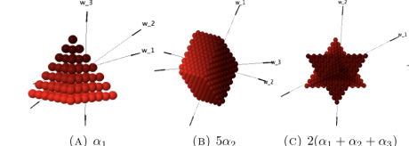

On Kostant’s weight q-multiplicity formula for sl_4(C)
with Rebecca E. Garcia, Pamela E. Harris, Marissa Loving, David Melendez, Joseph Rennie, Gordon Rojas Kirby, and Daniel Tinoco

Repetitions of Pak-Stanley Labels in G-Shi Arrangements
with Cara Bennett, Ava Mock, Gordon Rojas Kirby, and Robin Truax